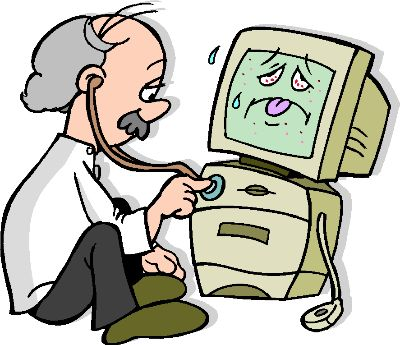

TROUBLESHOOTING: "to trace and correct faults in a mechanical or electronic system.", the definition according to Google. For this section of the website, we will only be briefly going over some types of troubleshooting. We will just be showing you what to do in common computer related situations.
Most of the time, troubleshooting will be trial and error. The easiest way of troubleshooting involves just doing a quick search online. You might find results such as forums, threads, or messages where other people are having the same issue and trying to fix it. Sometimes this method will be quick, other times it will be longer depending on how common your problem is. Just don't get flustered because that will make everything much more difficult than it needs to be.


Another way of troubleshooting is using the official Windows Troubleshooter. This will usually find problems within or on a computer. The way of finding the Windows Troubleshooter varies for Windows 7, 8, and 10. On the official Windows website, instructions for the performance troubleshooter is listed. "Open the Performance troubleshooter by clicking the Start button Picture of the Start button, and then clicking Control Panel. In the search box, type troubleshooter, and then click Troubleshooting. Under System and Security, click Check for performance issues." You could also click Find and Fix Problems under System Security. You can do similar actions for troubleshooting other issues in Windows 7 as well. Windows 8 isn't much different for troubleshooting because it includes similar features such as Automatic Repair. Finally Windows 10 is a simpler way of troubleshooting. Much like 7 or 8, Windows 10 comes with a built in troubleshooter program. But Windows 10 is still only about a year old, so there are plenty of websites showing common problems and solutions, like this one. Hope you figure out your problems!
